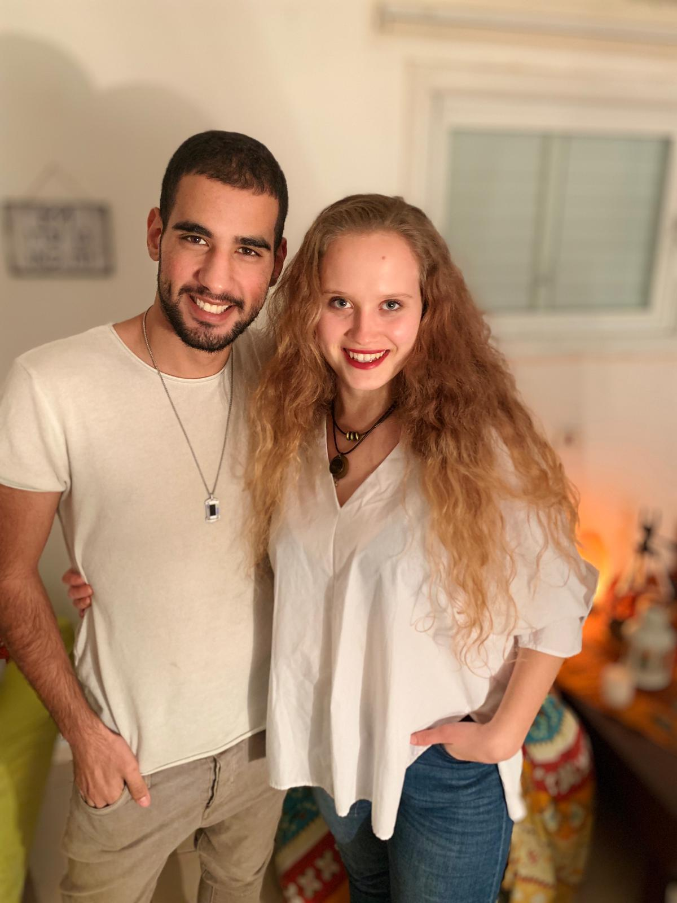

אופיר וליאור - הפצת האור השמימי
מעניין אתכם לשנות שינוי מהותי, בתחום שאתם תקועים בו כבר שנים ? הסבר מעמיק על הטיפול, למי הוא מיועד, מה מטרתו ואיך הוא מתבצע!
054-6960843 אופיר
054-4875143 ליאור
Facebook - אופיר וליאור- הפצת האור השמימי

אופיר וליאור מציעים לך טיפול יחודי ויעודי לצורך שלך !
בשיטות מתקדמות לריפוי וחקר תת המודע בינהן : אנלפי, מטא-פסיכולוגיה, שימוש בפרוטוקלים בגלי גמא של המוח, תקשור עם הדרכות גבוהות וריפוי אנרגטי.
מיקום : קליניקה בראשון לציון, או מפגש אינטרנטי בשיחת וידאו אונליין מהבית מכל קצוות הארץ וחול
השקעה בשינוי משמעותי בחייך: 300 שקלים לשעת טיפול
אפשר לקבוע תהליך ליווי וטיפול למספר מפגשים משני חיים וממוקדים!
לקביעה עכשיו מוזמנים ליצור קשר: 054-6960843 אופיר 054-4875143 ליאור
אנחנו עושים גם תקשורים!
את יכולת התקשור קיבלנו בגיל צעיר מאד, ופיתחנו ושידרגנו עם השנים.. ואתם זוכים לסשן אחד עם שני מתקשרים מנצחים! למי מיועדת ההצעה?
אם איבדתם אדם יקר, והייתם רוצים להעביר/לקבל מסר ממנו, או לשאול לשלומו. אם הייתם רוצים להתחבר למדריך הרוחני שלכם, וליצור יכולת תקשור יום יומית איתו אם הייתם רוצים לפתח יכולות רוחניות מסויימות (חקר גלגולים, ראיית הילות, טלפאטיה ועוד..) אם יש לכם שאלות בנוגע לשיעורים בחיים, תקיעויות, דילמות.. שהייתם רוצים פרספקטיבה גבוהה עליהם
אתם יותר ממוזמנים ליצור איתנו קשר ולקבוע שעת תקשור!
מיקום : קליניקה בראשון לציון, או מפגש אינטרנטי בשיחת וידאו אונליין מהבית מכל קצוות הארץ וחול
השקעה בתקשור: 300 שקלים לשעת תקשור
אפשר לקבוע מספר תקשורים לתהליך של ליווי מתוקשר, המיועד לצרכים שלכם ולהתפתחות שלכם!
לקביעה עכשיו מוזמנים ליצור קשר: 054-6960843 אופיר 054-4875143 ליאור
הטיפול עצמו
הטיפול מתמקד בחקירה תודעתית ברובד תת המודע, וביצוע שינוי רצוי בחייו של המטופל דרך בחירה, התמרה רגשית ושינוי קוואנטי של המטופל- אשר ישפיע על הרבדים שלאחריו: סף המודע, המודע ,הגופים שלנו (הרגשי, האנרגטי, הפיזי) ,המציאות הפיזית והאלקטרומגנטית. מענה גבוה על השאלה: "למה מה שקורה לי קורה לי?" והבנה גבוהה של המצב ומה בתת המודע שלנו ייצר אותו.-פירוט על תהליכים אפשריים להשגת מטרה זו עבודה עם ועל הצ'אקרות – כל צאקרה היא מרכז אנרגטי המשפיע על מספר תחומים בחיים. חסימה באחת או יותר מהצאקרות משפיעה על שלל תחומים בחיים ועלולה ליצור בעיות הקשורות לביטוי עצמי, זוגיות, פוריות, היעדר סיפוק בעבודה, משקל, בעיות בהגעה לסיפוק מיני, ערך עצמי נמוך, כאבים בגוף ודלקות חוזרות. בסריקה אנרגטית גופכם יציג לנו היכן התקיעות, שם נעשה עבודה תודעתית ביחד אתכם על סיטואציות בחייכם ונדאג לזרימה אנרגטית ואיזון, אשר תשפיע על חייכם בפועל ותפתור את התקיעות.
עבודה עם הילד פנימי- חיבור לצא'קרת הלב ומקלעת השמש, עבודה עם רגשות כואבים ונמוכים. נלמד כלים כגון : כיצד לתקשר עם הילד הפנימי שלכם, לנהל איתו דיאלוג תורם ומודע ללא הדחקה, להפסיק להיות קורבן לנסיבות רגשותינו שצפים, ולדעת לנהל אותם באופן יעיל במילים אחרות, להיות ההורה של עצמנו בעצמנו.
נעבוד על היכולת להפריד בין החלקים השונים בנו כגון- המחשבות, הרגשות, האגו והנשמה, וממקום זה נדע לענות על השאלה: מה נכון עבורי? מתי האגו מדבר ומתי הנשמה מדברת? כיצד לא לתת לרגשות להשתלט ואיך ניתן להתבונן עליהם במבט על, להתמיר ולהתנהג שונה מהמנגנון הראשוני שלנו – ברירת המחדל, שבגללו הרבה פעמים באים לטיפול ברצון לשנותו.
במידת הצורך ובהתאם למטופל ניתן לבצע :שינוי חוזה תודעתי הנחתם 40 יום לפני הלידה, ניתוקים אנרגטיים, לידה מחדש ברמה התאית הרגשית והאנרגטית, לימוד כלים לשימוש אנרגטי וחקירה תודעתית עצמית ועוד.
קיימת אופציה לפתח חוויות רוחניות במידה ותרצו זאת: פתיחת ערוץ התקשור והרוחניות, או חיבור למדריכים עליונים לקשר רציף איתם, חיבור לאני עליון, ראיית הילות ועוד.
הכלים שאנו משתמשים בהם
הכלים בהם אנו משתמשים בטיפול: תקשור עם ערוצים מותאמים לטיפול(הדרכה גבוה, האני הגבוה של המטופל), מדיטציות עומק לשינוי בתת המודע בגלי תטא וגמא של המוח , מסרים ויעוץ מההדרכה הגבוהה בתקשור, עבודה עם קלפים (טארוט, מרלין, פנימיאלים, ארכיטיפים) וכלים אנרגטיים (כגון ניתוקים אנרגטיים, מודלים לחקירה פנימית,תדרים,סריקות אנרגטיות, הגנות וכ'ו) כמו כן מתבצעת עבודה עם שיקופים- וכל זה מתפיסת המטאיזם, NLP ,הפסיכולוגיה והפיזיקה הקוואנטית.
התפיסה שלנו בנוגע לטיפול ומטרתו:
"המטופל הינו המטפל הטוב ביותר של עצמו, ואנחנו הכלי לחיבור שלו עם מה שהוא כבר יודע עמוק בתוכו ונשכח" מטרת הטיפול הינה לסייע לכם לעזור לעצמכם, להקנות לכם כלים למודעות ועבודה פנימית, להחזיר את תחושת הביטחון ולייצר מצב רצוי במקום המצב המצוי - כל זאת דרך הטיפול והכלים שפורטו. מטרתנו היא להוות הדרכה ולהעביר טיפול עומק, ללא הצורך לייצר מטופלים חוזרים והדבר יסתכם ממפגש בודד עד שלושה מפגשים. בהם נפתור את הבעיה מהשורש, נקצור את המנגנון ההרסני ונביא כלים לשימור המצב הרצוי ולחקירה עצמית. לפי תפיסתנו- הכל מה שמתרחש בנו ובסביבתנו, גם הנסיבות, יש לנו השפעה ישירה עליהם וניתן לשנותם!למי טיפול מתאים? למי לא?
הטיפול מתאים לכל אדם מודע, המוכן לקחת אחריות על חייו ולהסכים לבחור לעשות את הצעד הבא, אשר רוצה לשנות ולטפל בדפוסים המנהלים אותו ואת חייו. תחומים לדוגמא:-בריאות פיזית (מחלות ודלקות חוזרות,כאבים פסיכוסומטיים, כאבי ראש וגב.. וכו)
-בריאות נפשית (רגשות מעיקים, אובססיביות,חוסר ביטחון,השרדות ועוד),
תקיעות בקריירה ובהגשמה העצמית (חוסר הגשמה עצמית, חוסר סיפוק בעבודה ועוד),
-בזוגיות ובמיניות (מציאת זוגיות, "בכל מערכת יחסים בגדו בי", דפוסים בתחום הזה),
-משפחה וכ'ו.
אם אינכם בטוחים שבעייתכם יכולה להתאים לסוג הטיפול שאנו מציעים, ניתן להתייעץ איתנו בפרטי ונבדוק. הטיפול אינו מתאים - לאנשים הסובלים או מאובחנים במחלות נפשיות קשות כגון - סכיזופרניה, מאניה דפרסיה, פסיכוזה.